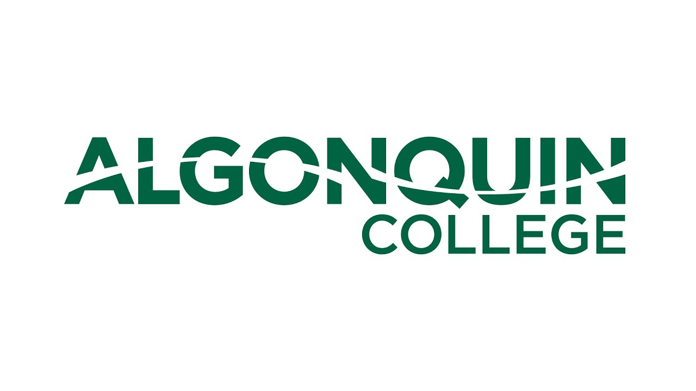
Business Intelligence Systems Infrastructure
January 2026 - PresentAlgonquin College, Ottawa, Canada
Accenture Canada (Meta) — Ottawa, Canada
Managed and optimized performance marketing campaigns for 250+ advertisers at Meta, leveraging data analytics, A/B testing, and BI reporting to drive measurable growth in ad spend and return on investment.
Ottawa Carleton Soccer League — Ottawa, Canada
Drove audience growth and campaign performance for a sports league by combining content creation, paid social advertising, and data analytics to deliver a 400% subscriber increase and 20% year-over-year registration growth.
Best Buy Canada — Ottawa, Canada
Delivered measurable impact in a customer-facing retail role through fraud prevention, process improvement, and data-driven service strategies that reduced return losses, and boosted customer satisfaction scores.

Algonquin College, Ottawa, Canada
Carleton University, Ottawa, Canada
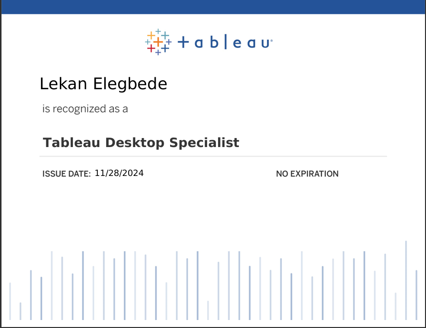
Earned the Tableau Desktop Specialist title by demonstraing my foundational knowledge of Tableau Desktop and data analytics to solve problems.

Learned AML concepts such as Stages of ML, KYC, Customer Due Diligence, Sanctions, Politically Exposed Persons, Terrorist Financing and STRs filling.
Check out my professional projects
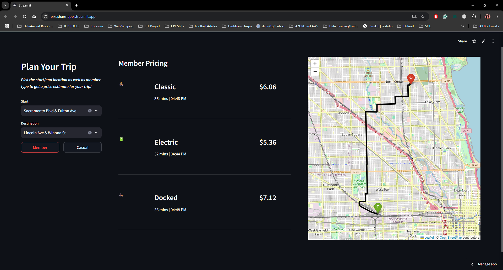
In this project, I implemented a price estimation algorithm using an XGBoost model trained on a year's worth of historical data. The app provides users with accurate estimates for trip fares and ride durations based user inputs such as start and end locations, membership type, and desired bike type. Integrated OpenAI ChatGPT-4.0 model to generate detailed route descriptions based on start and end stations. Explore the application below!

This project ranks and group all 23 Ottawa wards by safety, providing actionable insights for residents, policymakers, and anyone considering a move to the city. The goal of this project was to analyze safety across Ottawa's wards, grouping and ranking them from the safest to the most dangerous using machine learning and data visualization techniques.

This research project examines the changes in gas prices across Canada from 1990 to 2024, using monthly data from self-service filling stations provided by Statistics Canada. It focuses on price fluctuations across different provinces, uncovering insights on key metrics such as year-over-year changes, average costs, and seasonal price variations.
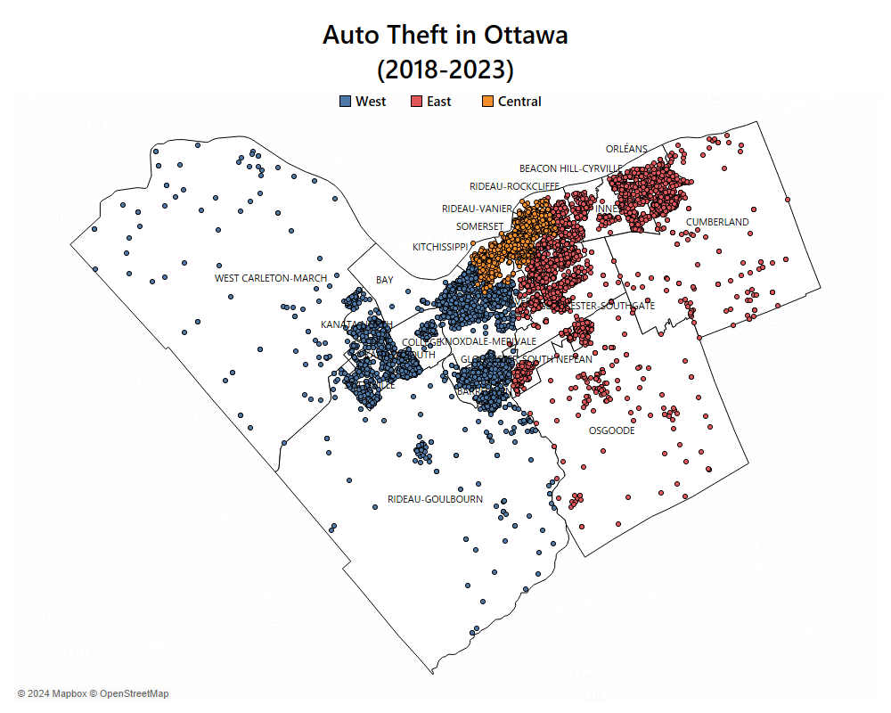
This project analysis over 7,000 car thefts recorded by the Ottawa Police Service (OPS) from 2018-2013, uncovering patterns in theft occurrences and analyze key trends, such as year-on-year changes, recovery rates, financial loss amount, and geographical analysis to identify high-risk areas in Ottawa, providing insights and recommendations to stakeholders to improve security measures and recovery rates.
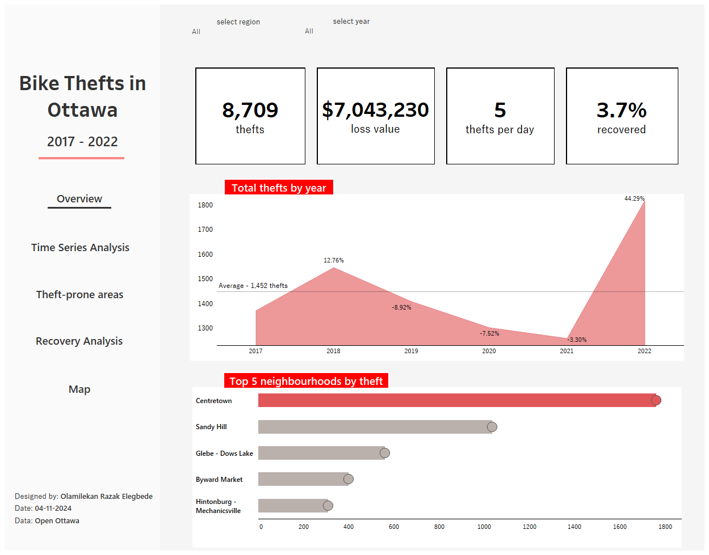
An interactive dashboard visualizing bike theft patterns across Ottawa neighbourhoods, highlighting high-risk areas and seasonal trends.
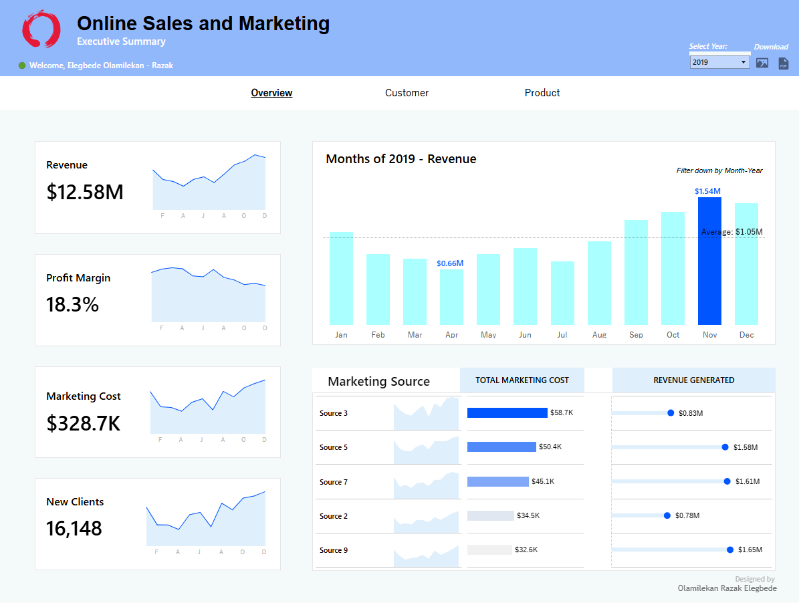
This project analyzes data for an e-commerce company specializing in the sale of popular electronic products to uncover critical insights covering sales, marketing expenditures, customer insights, and product offerings across 310 products in 10 business lines, that will enhance OxiN’s marketing strategies and provide data-driven recommendations

A comprehensive database to automate various processes for a sports league including creating new leagues, handling team signups, managing field rentals and payments, updating user records and processing cancellations. Through this project, I aim to demonstrate my ability to handle end-to-end database development, including requirements gathering, table creation, data relationships, automation, and user privilege management.

An end-to-end dashboard that tracks and provides stakeholders with detailed insights on company KPIs — revenue generated, total trips, and ride details such as duration, revenue, and start/end time station.

This project analyzes the annual sale data for a bike rental company, with over 5 million records to extract insights and provide actionable recommendations to drive customer and revenue growth, optimize targeted marketing, maximize product performance and improve operational efficiency.

Analyzing product sales records for a retail company to identify sales trends and performance by product category and customer region.
Checkout some of my Personal and Sports Projects
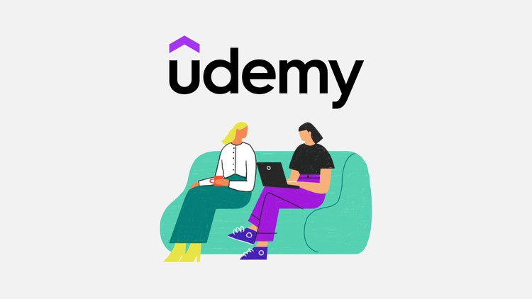
Web scraping to collect and monitor daily price trends of Udemy courses. Includes an email notification feature that alerts users when courses go on sale.

An analysis of over 130,000 event data on Bayer Leverkusen's invincible season using Statsbomb API in Python and Tableau. After going an entire 34-game season unbeaten, I decided to obtain insights into how Bayer Leverkusen were able to achieve this.

A comprehensive post-match tactical report for the UEFA Euro 2024 Final between Spain and England, covering match dynamics and player performances.
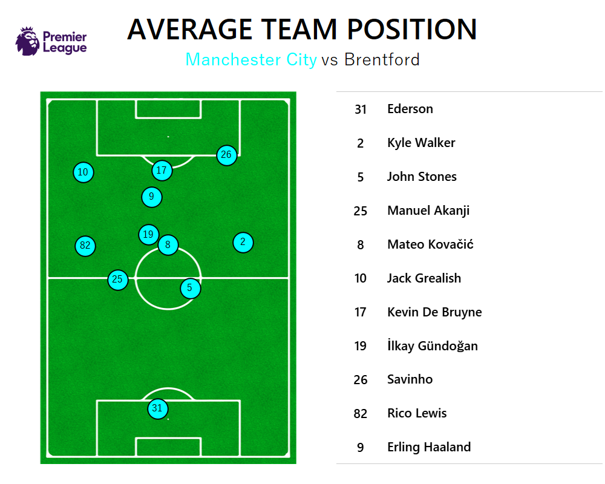
Provides insights into team shape and structure, individual player roles, and defensive/offensive balance.

A visual summary of total shots, shots on target, and goals scored by each team — offering insights into shooting accuracy and effectiveness.

A visual representation of passes made between players in a match, showing how they connect with each other on the pitch.
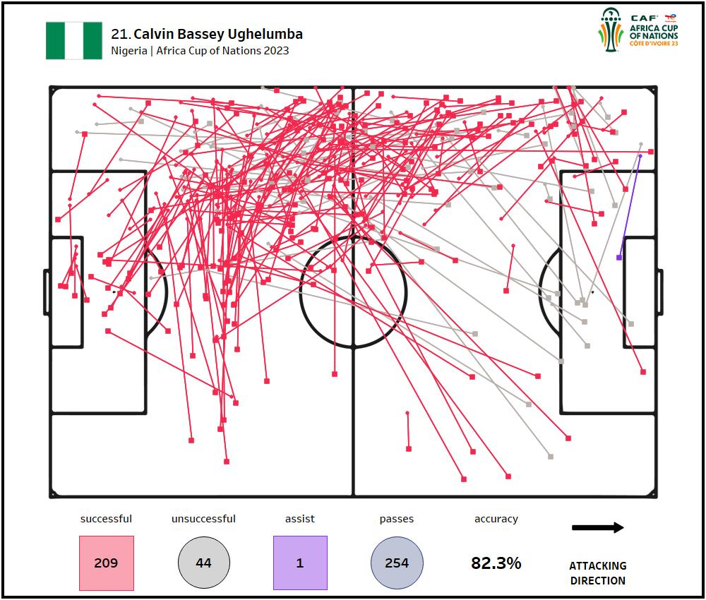
Visualizes all passes made by a player in a game to evaluate passing performance, distribution, accuracy, and areas for improvement.

Represents a player's involvement in goals through goals and assists, identifying patterns in preferred shooting locations or assist zones.
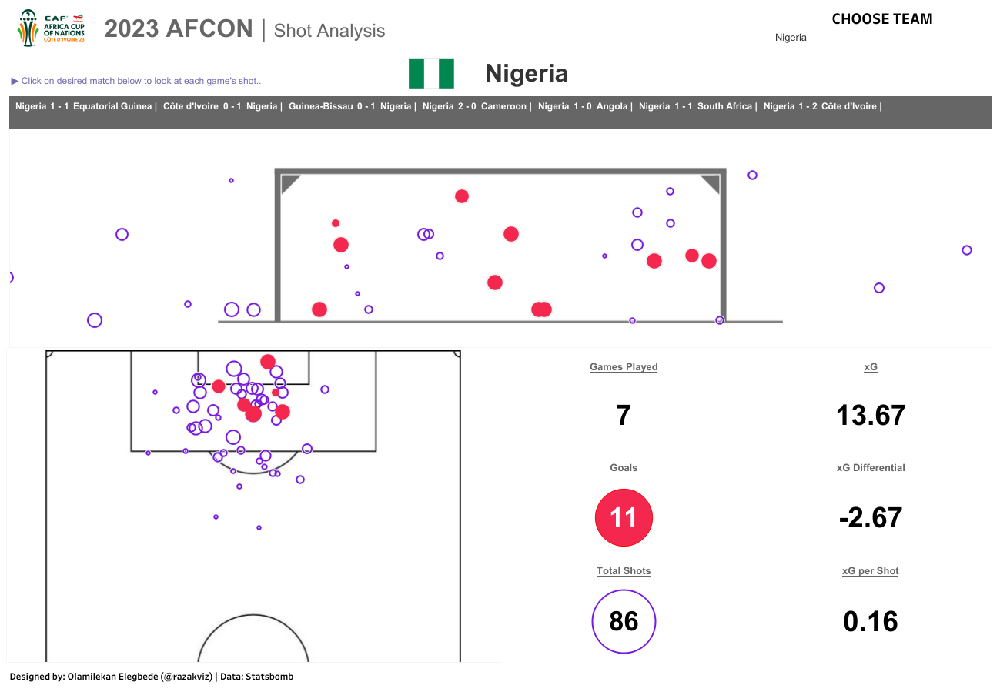
Accounts for shot outcomes including goals, shots off target, and saves — with key metrics like xG, xG Differential, and xG per Shot.
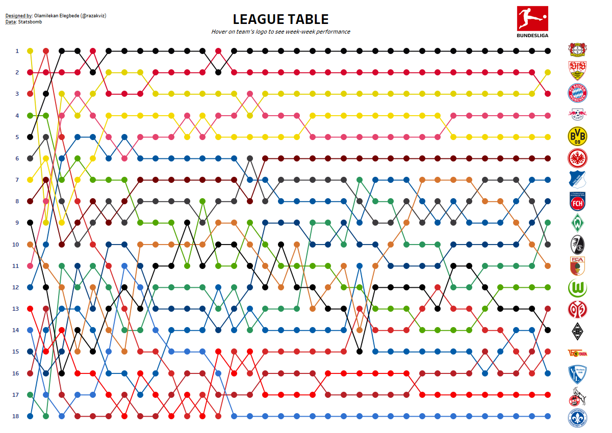
Shows how each team's ranking fluctuated throughout the season, highlighting dramatic changes in form and comparing performance trends.
Social media graphics, video edits, and visual designs for my local community

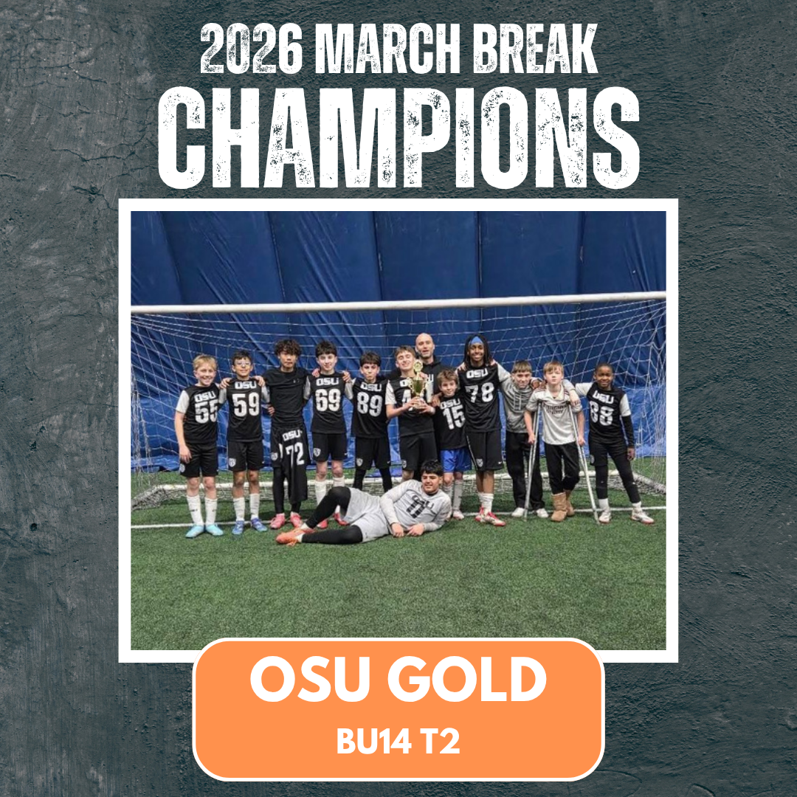
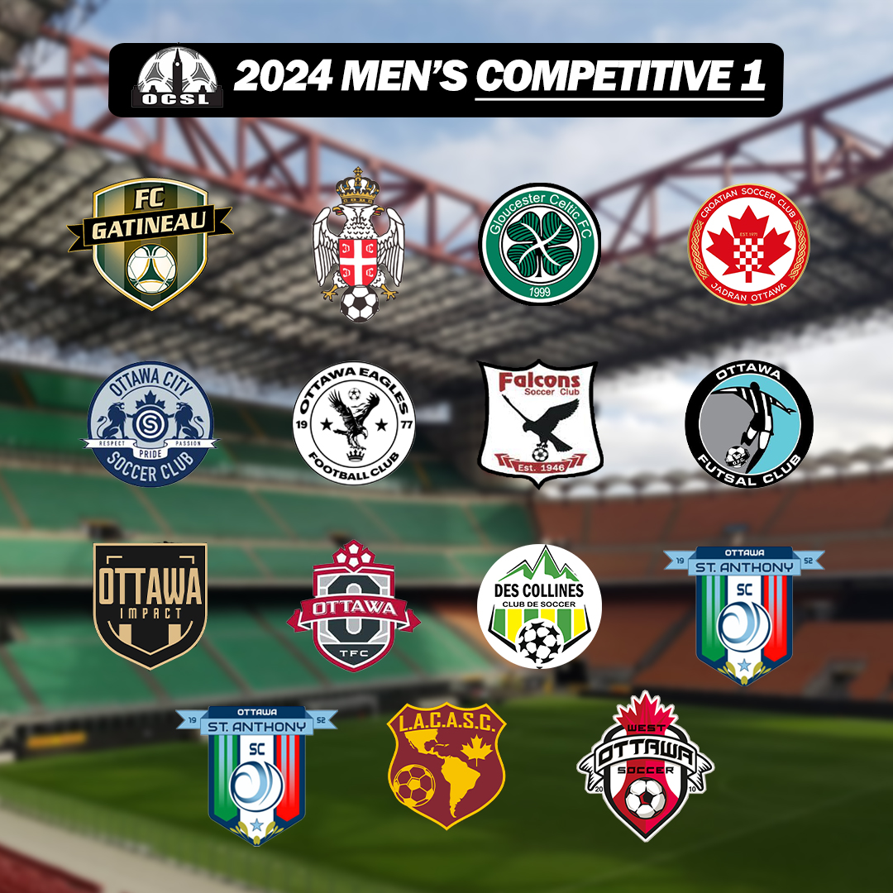
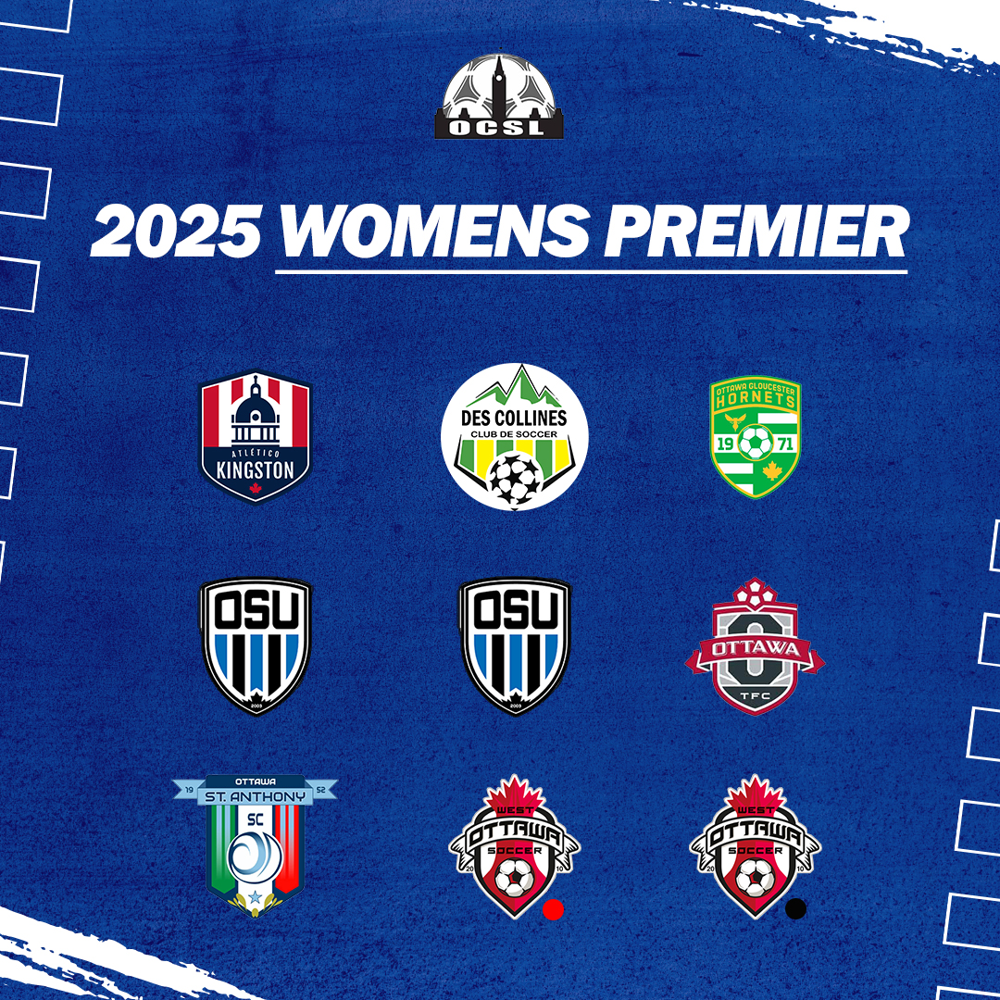

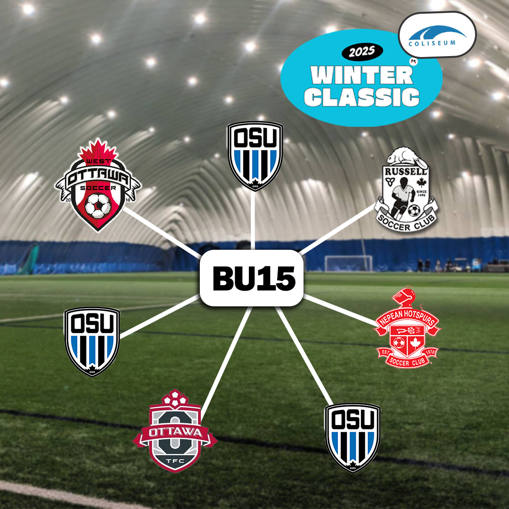